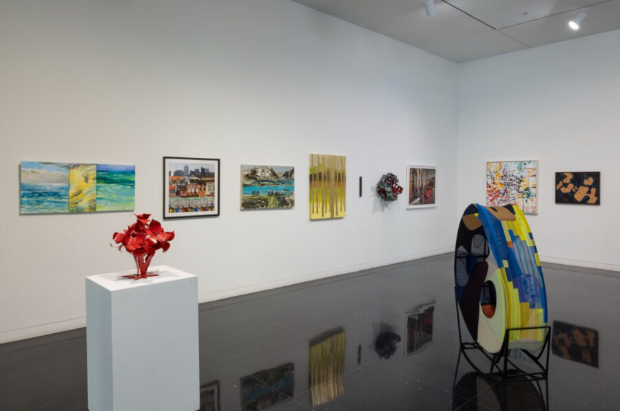

The 92nd Exhibition of Visual Artist Members
The Arts Club’s Exhibition of Visual Artist Members is a beloved tradition that brings great pride and prestige to the institution and its membership. Following an inaugural exhibition of paintings by John Singer Sargent in 1916, the second exhibition ever mounted at The Arts Club was of work by our members. Although its structure has changed over the past century, the goal of the exhibition remains the same: to celebrate and showcase the creative efforts of our artist members across a range of media, styles, genres, and forms.
To continue The Arts Club’s tradition of showcasing a current and dynamic representation of our members’ practices, participants are asked to submit works completed within the past two years. Some of the artists members are participating in this exhibition for the first time; others have participated for several decades.
It is a remarkable accomplishment to have reached the 92nd Artist Exhibition, the 91st of which featured a record-breaking 84 artist participants. We celebrate most sincerely our artist members’ capacity to thrive, make new and exciting work, and forge community through turbulent times.